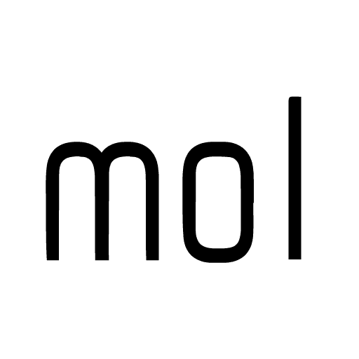
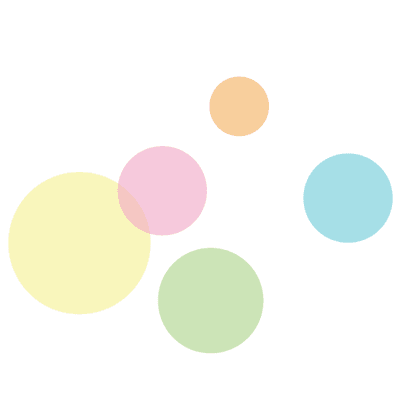

Let's share "mol" with everybody!!
mol (mecha omo loi) をテーマに好奇心をくすぐられる発表・展示を行います！
参加者全員がみんなでmolになれる、
1mol (6.02*10^23) 回目の高専カンファレンス "mol" 始まります
プレゼンによる発表形式を主とした勉強会形式のイベントです。 全国の高専生・卒業生が中心となり、お互いに自分の趣味や技術・経験、夢など好きなことを好きなカタチで発表し合います。
発表内容は情報技術に関する知識が中心となっています。他にもデザインや化学、留学、果ては趣味や妄想まで、さまざまな分野の発表があります。
1mol (6.02*10^23) 回目の開催となる本イベントは、2016年4月30日（土）明石工業高等専門学校にて開催されます。
| 日時 | 2016年4月30日（土） |
|---|---|
| 会場 | 明石工業高等専門学校（兵庫県明石市） |
| 参加費用 |
名刺については「名刺デザイン代行」をご参照ください。 |
| 定員 | 120人 |
などなど…
高専カンファレンスmolは、どなたでもご参加いただけます。
高専に関係のある方、ない方、はじめて参加の方も歓迎しております。
飛び入り参加も可能です。
ただし、出来る限り前日までに申し込みを済ませたうえでご来場ください。
高専カンファレンスmol 参加申し込みはこちら
可能です。
発表の義務はございません。
ぜひ、発表者の好奇心揺すぶられる発表にご期待ください！
申し込みページより可能です。
参加できなくなった場合、前日までにキャンセルをお願いします。
はい。プレゼン発表・ブース発表についてはUstreamで配信を行う予定です。
今回の高専カンファレンスmolでは、参加者の方々の名刺を運営側でデザインしてお渡しする「名刺デザイン代行」プランをご用意いたしました。
名刺をお持ちでない方、せっかくなら記念に名刺を作ってみたい方は、ぜひ名刺作成プランをご利用ください！
名刺の発注業者の関係で価格が変動する恐れがあります。予めご了承ください。
名刺デザイン代行プランにお申し込みをされた方へは、後日Doorkeeperに登録されたメールアドレス経由で、以下の「内容」などをお聞きいたします。
| 費用 | 学生 : 500円 社会人 : 1,000円 本会への参加費用込み。「参加費用」を参照 |
|---|---|
| 枚数 | 100枚 |
| 内容 |
|
| 申し込み締め切り | 4/10（日）23:59 まで 締め切り日まではプラン変更が可能です。締め切り以降にキャンセルされた場合は必ず料金をお支払いいただきます。 |
Twitter などのアイコンをデコって参加者とつながろう！
